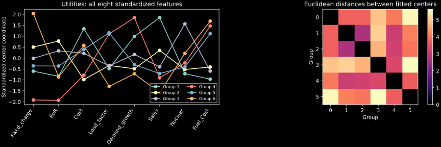
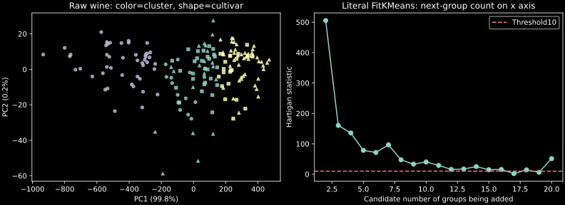
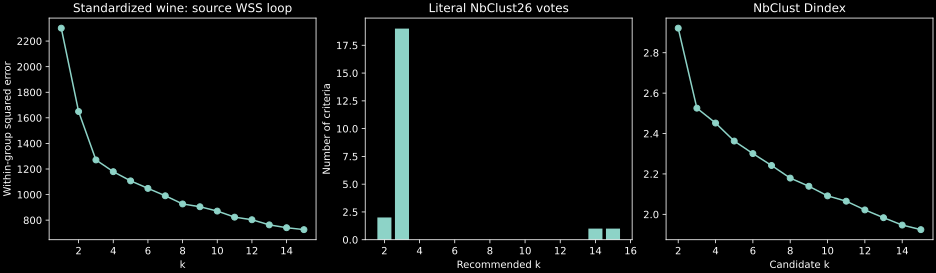
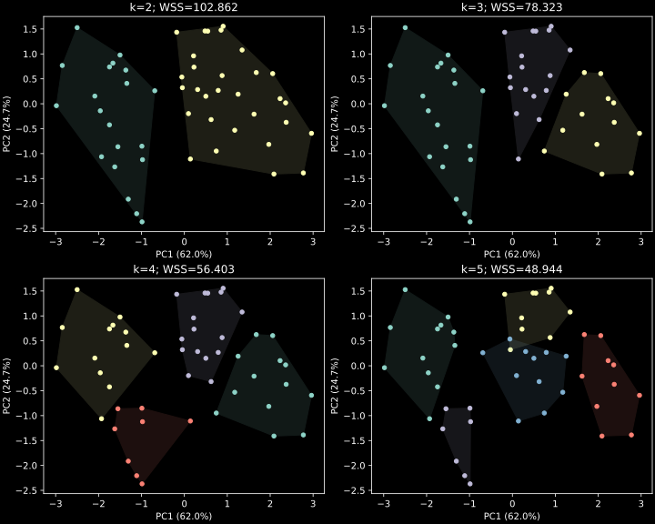
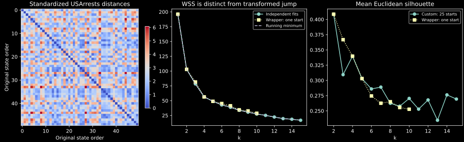

IIT Hyderabad · NPTEL · Independent study edition
K-means as alternating optimization
6.1 A partition defined by squared error
A hierarchy answers a nested sequence of grouping questions. K-means instead asks for one partition into a specified number of groups. Its computational appeal comes from replacing repeated comparisons between whole clusters by comparisons with representative centers. That convenience has a precise geometric cost: arithmetic means and squared Euclidean distances define the problem. Changing feature units can change the answer, and replacing a distance formula does not automatically produce a valid version of the same algorithm. The lecture introduces this distinction before its numerical example. Source: partitioning versus hierarchical clustering.
Let $x_1,\ldots,x_n\in\mathbb R^d$ be the observed feature vectors, where $d$ is the number of features. A partition $C_1,\ldots,C_k$ consists of nonempty, disjoint index sets whose union is $\{1,\ldots,n\}$. With representative $\mu_j\in\mathbb R^d$ for group $j$, the objective is
The integer $k$ is an input, not an estimate supplied by this objective alone. In particular, allowing one group per observation gives zero error. A useful grouping therefore balances compression, separation, stability, interpretability, and the intended decision. None of those additional purposes is captured merely by minimizing (6.1) over every possible $k$.
The representative minimizing a fixed group's error is its arithmetic mean $\bar x_C=|C|^{-1}\sum_{i\in C}x_i$. To see this without differentiability assumptions, write $x_i-a=(x_i-\bar x_C)+(\bar x_C-a)$, expand the squared norm, and use $\sum_{i\in C}(x_i-\bar x_C)=0$. The cross terms disappear, leaving
The second term is nonnegative and vanishes exactly at the mean. This identity also explains why an outlying observation can move a center strongly: its contribution grows quadratically with distance. A medoid, a coordinatewise median, and a trimmed mean solve different representative problems and should be named separately.
If each feature is standardized as $z_{i\ell}=(x_{i\ell}-\bar x_\ell)/s_\ell$, Euclidean k-means on $z$ minimizes a weighted error on the original coordinates, with weight $s_\ell^{-2}$ on feature $\ell$. Standardization is thus part of the model. It does not merely make the computer numerically comfortable. The course uses sample standard deviations in its scale examples; the lab makes that divisor explicit. This differs from the mean absolute deviation used by the preceding chapter's DIANA standardization.
6.2 Descent, a hand calculation, and optimizer conventions
The familiar Lloyd iteration alternates two operations. Holding the centers fixed, assign every observation to a nearest center. Holding the resulting assignments fixed, replace each center by its group mean. The first operation minimizes each observation's contribution independently. Equation (6.2) proves that the second operation minimizes each group's contribution. Consequently neither operation increases (6.1). These are conditional minimizations; their composition need not find the best partition among all possible assignments.
For a finite dataset there are finitely many assignments. With a deterministic treatment of ties, nonempty groups, and strict improvement whenever the assignment changes, descent must reach a stable assignment after finitely many changes. Practical software adds iteration limits, numerical tolerances, and rules for empty groups. Without specifying these conventions, a claim that “k-means converged” is incomplete. A stable solution is a local solution under the algorithm's moves; it is not a certificate of a global minimum.
The source example uses four observations $A=(5,3)$, $B=(-1,1)$, $C=(1,-2)$, and $D=(-3,-2)$. Start from groups $\{A,B\}$ and $\{C,D\}$, whose means are $(2,2)$ and $(-1,-2)$. The squared distances to these two centers are respectively $(10,61)$ for $A$, $(10,9)$ for $B$, $(17,4)$ for $C$, and $(41,4)$ for $D$. Thus only $B$ changes group. The old assigned error is $10+10+4+4=28$; reassignment with the old centers reduces it to $27$. Source: four-observation calculation.
The updated centers are now $A$ itself, $(5,3)$, and the mean of $B,C,D$, namely $(-1,-1)$. The first group contributes zero. The remaining squared distances to their own center are $4,5,5$, so the updated error is $14$. Rechecking the assignments leaves all four observations in these groups. The lab executes both conditional steps and verifies the full sequence $28\to27\to14$. Separating the assignment error from the updated-center error makes the descent argument visible instead of hiding it inside one library call.
Initialization matters because different basins can lead to different stable partitions. Multiple starts repeat an optimizer from several initial center sets and retain the result with the smallest observed error. Increasing the number of starts improves the search opportunity; it gives no general proof that the global optimum has been found. A seed fixes a particular generator's state. The same integer seed in two programming languages generally does not select the same rows or imply identical fitted groups.
A useful extension explains why a transfer optimizer can differ from nearest-center reassignment. Moving $x_i$ from group $A$ of size $a>1$ to group $B$ of size $b$, while refitting both means, changes the error by
Apply (6.2) to the enlarged group and to the group with the point removed: addition costs the first term, while removal saves the second. Thus the exact gain includes group-size factors, whereas Lloyd's fixed-center assignment compares only distances. In the source initialization, transferring $B$ and refitting saves $2(10)-(2/3)(9)=14$, agreeing with the executed change from error 28 to 14. This transfer identity describes a move, not the complete scheduling and acceleration rules of a software optimizer.
The R calls in this lecture use the default Hartigan–Wong optimizer. Its transfer operations differ from the batch reassignment just used to prove Lloyd descent. Scikit-learn's explicitly selected Lloyd implementation is therefore an instructive alternative, but is not by itself a literal translation of those default R calls. Our conversion records distinguish the objective, the optimizer, the initial centers, and the final partition. Agreement of the last item does not establish agreement of every intermediate update. The primary R kmeans documentation states the optimizer and default random-row initialization; the scikit-learn documentation describes its separate initialization and algorithm controls.
6.3 Choosing the number of groups
Let $W_k^*$ denote the smallest attainable value of (6.1) among partitions into exactly $k$ nonempty groups. For $1\le k<n$, a group containing at least two observations can be split. Using its original center for both children preserves the old error, and subsequently fitting the two means can only reduce it. Therefore $W_{k+1}^*\le W_k^*$. This argument is about optimal objective values. A collection of finite, randomly initialized fits need not satisfy the same ordering.
The source's USArrests error plot rises between two neighboring values of $k$. That rise signals an inferior local fit, a change of computational settings, or a plotting/data error; it is not a property of the optimal k-means objective. Nor does such an increase prove that the extra group is intrinsically unnecessary. The lab reports both independently fitted errors and their running minimum so this distinction can be checked. The running minimum is a diagnostic display, not a new claim that all fits have become globally optimal. Source: error-curve interpretation requiring this qualification.
An elbow seeks a value beyond which further groups make comparatively small error reductions. It is a heuristic and may have no visually unique answer. A more formal source construction transforms a distortion $d_k$, proportional to mean squared error per feature, before differencing:
The minus sign in the power is essential. The source board shows it, although the automatic captions describe only an unspecified power. For the initial comparison one may set the transformed zero-group distortion to zero, corresponding to infinite distortion. Exact zero distortion makes the negative power singular; this method is not defined by simply raising zero to a negative exponent. A largest transformed jump is a selection rule whose meaning depends on feature dimension, scaling, and how distortions were estimated. It is different from a raw decrease $W_{k-1}-W_k$. Source: inverse-power jump formula.
The source also describes the Hartigan statistic
and the heuristic of choosing the smallest $k$ for which $H(k)\le10$. This compares the reduction from adding a group with the remaining error. The threshold is a convention, not a universal guarantee of the true number of populations. Hartigan's selection statistic is also a different object from the Hartigan–Wong optimization algorithm. Sharing an author's name does not make their roles interchangeable.
Silhouette width evaluates a fitted partition in pairwise-distance geometry. For observation $i$, let $a_i$ be the average distance to the other members of its own group. For each other group compute its average distance from $i$, and let $b_i$ be the smallest such average. For a nonsingleton group and a positive denominator,
Positive values indicate that the observation is closer on average to its own group than to its nearest competing group. Negative values flag the opposite. The R convention assigns width zero to a singleton. The mean width compares candidate partitions for $2\le k\le n-1$; it is not the same objective as squared-error minimization. The lab uses Euclidean distances for this evaluation, matching the source's silhouette(...,dist(df)). Squared distances would define a different evaluation. See the primary silhouette documentation for these conventions.
Finally, a multi-index vote such as NbClust combines many criteria, each with its own response to dispersion, separation, and dimensionality. Replacing its full call by one silhouette or elbow calculation would omit most of the requested computation. The converted workflow retains the actual index tables and recommendations, rather than treating a visually similar plot as equivalent evidence.
6.4 Utilities: the feature set changes the problem
The first R application reads the same 22-company Utilities table used in the hierarchical lecture. It removes the company-name column, standardizes the eight numeric features, and calls kmeans(utilities.df.norm,6). This time all eight features define the fit. The earlier hierarchy used only standardized Sales and Fuel Cost. A difference in the resulting groups can therefore arise from a changed feature space even before considering the changed optimization criterion. Source: six-group Utilities fit and center profiles.
The lab retains the recovered book-author table and translates every displayed output: group memberships, the six center vectors, the within-group errors, the group sizes, the line profiles of the centers, and the Euclidean distance matrix between centers. The source call supplies neither nstart nor a visible seed, so the relevant R defaults are one random start and Hartigan–Wong optimization. Our runnable version supplies the explicitly recorded seed 2026 to make a new execution reproducible. That choice does not reconstruct an unseen historical random-generator state.
A profile coordinate is a mean in standardized units. A center with Fuel Cost coordinate one is approximately one sample standard deviation above the overall Fuel Cost mean. A negative coordinate is not a negative physical fuel price. Comparing entire profiles is more informative than calling the group number a ranking: cluster labels are arbitrary identifiers, and their numerical order has no ordinal meaning. The center-distance display summarizes separation among representative means; it omits each group's dispersion and is not a silhouette analysis.

6.5 Wine: distinguish raw and standardized analyses
The lecture next downloads the original UCI wine table. There are 178 observations, a cultivar label, and 13 chemical measurements. The lab retrieves that primary table and checks all 2,314 feature values against the canonical scikit-learn copy. Cultivar is retained only for evaluation and display; it is excluded from the fitted feature matrix. Including a known class label among the clustering inputs would change the question and contaminate the proposed unsupervised comparison. Source: UCI input and explicit cultivar exclusion.
The first wine analysis uses raw measurement units, seed 278613, three groups, and the default single start. It then repeats the three-group analysis with 25 starts. Fresh R references give errors 2,629,315.194018 and 2,370,689.686783 respectively. These values quantify a substantial improvement in the observed search result; the second value still carries no global-optimality certificate. Raw chemical units also strongly privilege high-variance coordinates. The first raw PCA display axis alone contains approximately 99.8091% of total raw variance. A visually compelling projection in that geometry should not be mistaken for equal weighting of all 13 measurements.
The source displays clusters as colors and cultivars as point shapes, then tabulates cultivar against cluster. The translated cross-tabulation preserves this distinction. Cluster labels can be permuted without changing the partition, so numerical label equality is not a classification accuracy. To compute an accuracy after label matching, the matching rule would itself need to be specified. More fundamentally, agreement with cultivars is an external assessment; it is not the squared-error quantity the clustering procedure optimized.
The useful::FitKMeans call evaluates one through twenty groups with 25 starts, resetting seed 278613 before each fit. The lab reproduces that reset convention and computes (6.4). The package's returned column Clusters denotes the group count being added: its row labeled 17 contains the comparison $H(16)$ between sixteen and seventeen groups. A reader must account for this offset before interpreting the plot. The primary wrapper source establishes both the indexing and seed reset.
This table does not justify three groups by the stated threshold rule. In the fresh reference the first statistic at most ten is $H(16)\approx1.987005$. The source's visually emphasized early reduction and its threshold rule are different decision procedures. Their disagreement is an informative consequence of raw-scale geometry and heuristic selection, not a reason to edit the table until it supports a preferred answer.

A separate source block loads rattle::wine, removes its first label column, and standardizes every chemical feature. It evaluates a one-start error curve for $k=1,\ldots,15$, resetting seed 1234 before each fitted value with $k\ge2$. It then calls NbClust(df,min.nc=2,max.nc=15,method="kmeans"), with default Euclidean distances and the default collection of 26 indices. These are new, standardized fits; they must not be merged with the raw-scale Hartigan calculation. Source: standardized wine and the complete multi-index call.
An additional source-code convention matters here. NbClust 3.0.1 explicitly resets the seed to one before its internal k-means partitions. The outer set.seed(1234) is therefore not the effective initialization seed for those partitions. The literal Python wrapper retains this behavior and records its package-version scope. Its output includes the full index and critical-value tables, group-count recommendations, and selected partition. The lecture's displayed recommendation favors three groups; that result belongs to this standardized multi-index procedure. It does not turn the raw-scale Hartigan table into a three-group threshold result.

6.6 USArrests: inspect the partition and the diagnostics separately
The final application uses the 50-state USArrests table. The four columns are Murder, Assault, Urban Population percentage, and Rape. The source removes missing rows and standardizes the retained features by sample standard deviations. This table has no missing entries, so the removal changes no rows. The translated distance heatmap contains Euclidean distances between these standardized state profiles, rather than feature values or center distances. Source: preprocessing and distance display.
The source fits two through five groups with 25 starts and displays their projections into two principal coordinates. The first two standardized PCA directions contain approximately 62.0% and 24.7% of the total variance, leaving about 13.3% outside the picture. The lab records a controlled stream for these comparisons because the initial seed is not shown in that source block. Convex hulls in the projection help a reader see the displayed groups; overlap of projected hulls does not prove overlap in the complete four-dimensional feature space.

The separate fviz_nbclust calls forward no number of starts to kmeans, so their default is one start, with a maximum of ten groups. The lab retains these additional wrapper curves alongside the custom ten-start error and 25-start silhouette curves. Separate recorded seeds make these demonstrations repeatable; an unseen historical session stream is not inferred. The full state-label displays also preserve the source's selected-feature two-group scatter and final four-group PCA view.

The source's error-curve function uses ten starts and seed 123 over one through fifteen groups. Its silhouette function uses 25 starts and Euclidean pairwise distances. Those are distinct fitting/evaluation settings. In a separately recorded seed-123 silhouette run, the maximum mean width is approximately 0.408489 at two groups; four groups give approximately 0.339689. Consequently the chosen four-group solution should be explained as a particular descriptive resolution, rather than presented as the unanimous optimum of every diagnostic.
The final, explicitly seeded source call is set.seed(123);kmeans(df,4,nstart=25). The fresh reference has group sizes $8,13,16,13$ and total within-group error $56.4031734583$. Total standardized error about the overall mean is $4(50-1)=196$. Its between-group component is therefore $139.5968265417$, or approximately 71.22% of total variation. This percentage is a descriptive variance decomposition, not a predictive accuracy or a causal explanation of differences among states.
The source also reports means on the original feature scales. The first group, for example, has means 13.9375 for Murder, 243.625 for Assault, 53.75 for Urban Population, and 21.4125 for Rape. Original-scale summaries are often easier to interpret than standardized center coordinates. The lab prints all groups, retains each state assignment, and permits a reader to audit the summary against the exact input rows. None of these aggregate observations licenses a claim about a particular individual's behavior.

The downloadable lab separates the source-data workflow from an independent mathematical construction. Its four-point example exhaustively checks every nonempty two-group partition, proving the reported error fourteen is globally best for that small dataset. No analogous exhaustive claim is made for the larger examples. The conversion ledger records optimizer, random-stream, scaling, wrapper, and data conventions separately so a numerical agreement has a clear scope.
6.7 Exercises with worked solutions
Mean optimality. For the four source points, compare the one-group squared error at the mean with its value at $a=(2,-3)$. Show why the difference cannot be negative.
Worked solution
The overall mean is $(0.5,0)$. The lab verifies that both sides of (6.2), evaluated at $a$, equal 98. The additional error is $4\|(2,-3)-(0.5,0)\|^2=4(2.25+9)=45$, so the mean-centered error is 53. The difference is a nonnegative squared norm multiplied by group size; no choice of $a$ can reduce it below zero.
Two descent steps. In the source initialization, why is the intermediate error 27 rather than 14? Which operation is responsible for each reduction?
Worked solution
Initially the assigned squared distances sum to 28. Keeping the centers fixed but moving $B$ changes its contribution from ten to nine, producing 27. Updating the first center to $A$ makes its contribution zero; updating the second center from $(-1,-2)$ to $(-1,-1)$ yields contributions $4,5,5$ for $B,C,D$, giving total fourteen. Combining assignment and centroid updates in one report conceals which conditional minimization established each inequality.
Optimal errors and failed searches. A fitted curve reports $W_4=60$ and $W_5=68$. Has the monotonicity theorem been disproved? Give a feasible five-group construction from the four-group fit.
Worked solution
No. The theorem concerns globally best errors, whereas these are errors returned by particular searches. Split any nonsingleton group of the four-group fit into two nonempty parts. Retaining the old center for both gives error sixty, and refitting the two means cannot increase it. Thus a feasible five-group solution has error at most sixty. The reported value sixty-eight is inferior to an explicitly available candidate; it does not establish that five groups are unnecessary.
A silhouette calculation. Partition the one-dimensional observations $0,2,10,12$ into $\{0,2\}$ and $\{10,12\}$. Compute every silhouette width and its mean using ordinary absolute distance.
Worked solution
Each within-group average is two. For zero and twelve the competing-group average is eleven, giving width $9/11$. For two and ten it is nine, giving width $7/9$. The mean is $(9/11+7/9)/2=79/99\approx0.79797980$, matching the executed library calculation. Squaring the pairwise distances would change the competing averages and answer.
One seed, several meanings. Explain the difference between the wine WSS loop,
FitKMeans, and NbClust initialization. Why is replacing all three by one scikit-learn call with the same integer seed insufficient?Worked solution
The source WSS loop resets seed 1234 for each fitted group count and uses one start. FitKMeans resets seed 278613 for each group count and uses 25 starts. The audited NbClust version overwrites the outer seed with one before its internal fits. Moreover R's default optimizer is Hartigan–Wong, and its random-row initialization and generator stream differ from scikit-learn defaults. Reproducing the objective alone omits optimizer and initialization behavior. The literal helper and reference comparisons must test these conventions explicitly.
Interpreting four groups. Recover the final USArrests between-group fraction from the reported total and within-group errors. Explain why a silhouette preference for two groups does not make the four-group descriptive table arithmetically incorrect.
Worked solution
The between-group fraction is $(196-56.4031734583)/196\approx0.71222871$. It measures the error reduction from the overall mean to four fitted means. Silhouette instead compares within-group pairwise distances with nearest competing-group distances. The objectives differ, and different resolutions can serve different descriptive purposes. A four-group table can be computed correctly while its group count remains a modeling choice requiring explanation.
Python laboratory
Run labs/ch06.py from the course folder.
Data and figure paths, when used, are resolved by the program. Dependencies are listed in
requirements.txt.
Supporting modules: ch06_hartigan_wong.py.
Complete runnable Python source
"""K-means descent and the lecture's exact source-data workflows.
The source workflows use the adjacent pure-Python Hartigan-Wong/R-RNG
port. --theory-only executes the independent mathematical construction.
No fitted R results are substituted for Python calculations.
"""
import argparse
from pathlib import Path
import numpy as np
import pandas as pd
from scipy.spatial.distance import cdist, pdist, squareform
from sklearn.metrics import silhouette_score
DATA = Path(__file__).resolve().parent / "data"
ROOT = DATA.parents[1]
def standardize(values):
values = np.asarray(values, dtype=float)
return (values - values.mean(0)) / values.std(0, ddof=1)
def centered_scores(values):
"""Unscaled PCA coordinates; callers explicitly choose their geometry."""
centered = values - np.mean(values, axis=0)
u, singular, _ = np.linalg.svd(centered, full_matrices=False)
return u[:, :2] * singular[:2], singular[:2] ** 2 / np.sum(singular**2)
def assigned_error(data, labels, centers):
return np.sum((data - centers[labels]) ** 2)
def mathematical_checks():
points = np.array([[5.0, 3.0], [-1.0, 1.0], [1.0, -2.0], [-3.0, -2.0]])
labels = np.array([0, 0, 1, 1])
centers = np.array([points[labels == j].mean(0) for j in range(2)])
before = assigned_error(points, labels, centers)
distances = cdist(points, centers, metric="sqeuclidean")
assigned = distances.argmin(axis=1)
reassigned = assigned_error(points, assigned, centers)
updated = np.array([points[assigned == j].mean(0) for j in range(2)])
after = assigned_error(points, assigned, updated)
assert np.allclose([before, reassigned, after], [28, 27, 14])
transfer_change = (2 / 3) * distances[1, 1] - 2 * distances[1, 0]
assert np.isclose(after - before, transfer_change)
assert np.array_equal(cdist(points, updated).argmin(1), assigned)
print("Source four-point squared distances:\n", distances)
print("Assignment/update WSS:", before, reassigned, after)
print("Stable centers:\n", updated)
print("Exact refitted transfer change:", transfer_change)
# Exhaustive small-data verification: all nonempty two-group partitions.
candidates = []
for mask in range(1, 2 ** len(points) - 1):
assignment = np.array([(mask >> i) & 1 for i in range(len(points))])
means = np.array([points[assignment == j].mean(0) for j in range(2)])
candidates.append(assigned_error(points, assignment, means))
print("Exhaustive four-point optimal two-group WSS:", min(candidates))
assert min(candidates) == 14
mean = points.mean(0)
trial = np.array([2.0, -3.0])
left = np.sum((points - trial) ** 2)
right = np.sum((points - mean) ** 2) + len(points) * np.sum(
(trial - mean) ** 2
)
assert np.allclose(left, right)
print("Mean-minimization identity, both sides:", left, right)
example = np.array([[0.0], [2.0], [10.0], [12.0]])
widths = silhouette_score(example, [0, 0, 1, 1])
expected = np.mean([9 / 11, 7 / 9, 7 / 9, 9 / 11])
assert np.allclose(widths, expected)
print(f"Authored silhouette example mean: {widths:.8f}")
print("Independent mathematical checks passed.")
def report_fit(name, result, columns):
print("\n" + name)
print("Sizes:", result["size"])
print("Centers:")
print(pd.DataFrame(result["centers"], columns=columns).to_string())
print("Within-group sums of squares:", result["withinss"])
print("Total WSS:", result["tot_withinss"])
print("Total SS:", result["totss"])
print("Between SS:", result["betweenss"])
print("ifault:", result["ifault"])
def save_fit(name, result, index):
pd.DataFrame({"cluster": result["cluster"]}, index=index).to_csv(
DATA / f"ch06-{name}-membership.csv"
)
def plot_source_workflow(
utilities,
utility_fit,
wine,
cultivar,
wine_fit,
raw_fractions,
hartigan,
wine_wss,
arrests,
arrest_fits,
arrest_wss,
silhouettes,
wrapper_wss,
wrapper_silhouettes,
multi,
):
import matplotlib
matplotlib.use("Agg")
import matplotlib.pyplot as plt
from scipy.spatial import ConvexHull
plt.style.use("dark_background")
figure, axes = plt.subplots(1, 2, figsize=(12, 4), constrained_layout=True)
for j, center in enumerate(utility_fit["centers"]):
axes[0].plot(range(8), center, "o-", label=f"Group {j + 1}")
axes[0].set_xticks(range(8), utilities.columns, rotation=55, ha="right")
axes[0].set(
title="Utilities: all eight standardized features",
ylabel="Standardized center coordinate",
)
axes[0].legend(ncol=2, fontsize=8)
distances = cdist(utility_fit["centers"], utility_fit["centers"])
image = axes[1].imshow(distances, cmap="magma")
axes[1].set(
title="Euclidean distances between fitted centers",
xlabel="Group",
ylabel="Group",
)
figure.colorbar(image, ax=axes[1])
figure.savefig(ROOT / "assets/ch06-utilities.svg", metadata={"Date": None})
plt.close(figure)
scores, _ = centered_scores(wine)
figure, axes = plt.subplots(1, 2, figsize=(11, 4), constrained_layout=True)
markers = ["o", "^", "s"]
for group in range(1, 4):
for actual in range(1, 4):
subset = (wine_fit["cluster"] == group) & (cultivar == actual)
axes[0].scatter(
*scores[subset].T,
marker=markers[actual - 1],
color=f"C{group - 1}",
s=18,
alpha=0.8,
)
axes[0].set(
title="Raw wine: color=cluster, shape=cultivar",
xlabel=f"PC1 ({100 * raw_fractions[0]:.1f}%)",
ylabel=f"PC2 ({100 * raw_fractions[1]:.1f}%)",
)
axes[1].plot(hartigan["Clusters"], hartigan["Hartigan"], "o-")
axes[1].axhline(10, color="#fb7185", linestyle="--", label="Threshold10")
axes[1].set(
title="Literal FitKMeans: next-group count on x axis",
xlabel="Candidate number of groups being added",
ylabel="Hartigan statistic",
)
axes[1].legend()
figure.savefig(ROOT / "assets/ch06-wine-raw.svg", metadata={"Date": None})
plt.close(figure)
figure, axes = plt.subplots(
1, 3, figsize=(13, 3.8), constrained_layout=True
)
axes[0].plot(range(1, 16), wine_wss, "o-")
axes[0].set(
title="Standardized wine: source WSS loop",
xlabel="k",
ylabel="Within-group squared error",
)
axes[1].bar(list(multi["votes"]), list(multi["votes"].values()))
axes[1].set(
title="Literal NbClust26 votes",
xlabel="Recommended k",
ylabel="Number of criteria",
)
dindex = multi["raw_indices"]["Dindex"]
axes[2].plot(dindex.index, dindex, "o-", label="Dindex")
axes[2].set(title="NbClust Dindex", xlabel="Candidate k")
figure.savefig(
ROOT / "assets/ch06-wine-selection.svg", metadata={"Date": None}
)
plt.close(figure)
scores, fractions = centered_scores(arrests)
figure, axes = plt.subplots(2, 2, figsize=(10, 8), constrained_layout=True)
for axis, (count, fit) in zip(axes.flat, arrest_fits.items()):
for group in range(1, count + 1):
subset = scores[fit["cluster"] == group]
axis.scatter(*subset.T, s=20, color=f"C{group - 1}")
if len(subset) >= 3:
hull = ConvexHull(subset)
polygon = subset[hull.vertices]
axis.fill(*polygon.T, alpha=0.12, color=f"C{group - 1}")
axis.set(
title=f"k={count}; WSS={fit['tot_withinss']:.3f}",
xlabel=f"PC1 ({100 * fractions[0]:.1f}%)",
ylabel=f"PC2 ({100 * fractions[1]:.1f}%)",
)
figure.savefig(
ROOT / "assets/ch06-arrests-partitions.svg", metadata={"Date": None}
)
plt.close(figure)
figure, axes = plt.subplots(1, 3, figsize=(13, 4), constrained_layout=True)
image = axes[0].imshow(squareform(pdist(arrests)), cmap="coolwarm")
axes[0].set(
title="Standardized USArrests distances",
xlabel="Original state order",
ylabel="Original state order",
)
figure.colorbar(image, ax=axes[0], shrink=0.7)
axes[1].plot(range(1, 16), arrest_wss, "o-", label="Independent fits")
axes[1].plot(range(1, 11), wrapper_wss, ":s", label="Wrapper: one start")
axes[1].plot(
range(1, 16),
np.minimum.accumulate(arrest_wss),
"--",
label="Running minimum",
)
axes[1].set(title="WSS is distinct from transformed jump", xlabel="k")
axes[1].legend(fontsize=8)
axes[2].plot(range(2, 16), silhouettes, "o-", label="Custom: 25 starts")
axes[2].plot(
range(2, 11), wrapper_silhouettes, ":s", label="Wrapper: one start"
)
axes[2].set(title="Mean Euclidean silhouette", xlabel="k")
axes[2].legend(fontsize=8)
figure.savefig(
ROOT / "assets/ch06-arrests-diagnostics.svg", metadata={"Date": None}
)
plt.close(figure)
def plot_state_coordinates(arrests_frame, arrests, initial, final):
"""Translate the source two-feature state labels and final PCA labels."""
import matplotlib
matplotlib.use("Agg")
import matplotlib.pyplot as plt
plt.style.use("dark_background")
scores, fractions = centered_scores(arrests)
figure, axes = plt.subplots(1, 2, figsize=(14, 6), constrained_layout=True)
for i, state in enumerate(arrests_frame.index):
axes[0].text(
arrests[i, 2],
arrests[i, 0],
state,
fontsize=6,
color=f"C{initial['cluster'][i] - 1}",
)
axes[1].text(
*scores[i], state, fontsize=6, color=f"C{final['cluster'][i] - 1}"
)
for axis, values in zip(axes, [arrests[:, [2, 0]], scores]):
span = np.ptp(values, axis=0)
axis.set_xlim(
values[:, 0].min() - 0.1 * span[0],
values[:, 0].max() + 0.25 * span[0],
)
axis.set_ylim(
values[:, 1].min() - 0.1 * span[1],
values[:, 1].max() + 0.1 * span[1],
)
axes[0].set(
title="Two-group labels in selected feature coordinates",
xlabel="Standardized Urban Population",
ylabel="Standardized Murder",
)
axes[1].set(
title="Final source four-group state labels",
xlabel=f"PC1 ({100 * fractions[0]:.1f}%)",
ylabel=f"PC2 ({100 * fractions[1]:.1f}%)",
)
figure.savefig(
ROOT / "assets/ch06-arrests-state-labels.svg", metadata={"Date": None}
)
plt.close(figure)
def run_source_workflow():
from ch06_hartigan_wong import RRandom, kmeans_r
from ch05_nbclust import nbclust_average
utilities = pd.read_csv(DATA / "ch05-Utilities.csv", index_col=0)
scaled_utilities = standardize(utilities)
utility_fit = kmeans_r(scaled_utilities, 6, seed=2026)
report_fit(
"Utilities k6; controlled seed2026 (source seed unspecified)",
utility_fit,
utilities.columns,
)
print("Utilities memberships:")
print(pd.Series(utility_fit["cluster"], index=utilities.index).to_string())
print(
"Utilities center distances:\n",
cdist(utility_fit["centers"], utility_fit["centers"]),
)
save_fit("utilities", utility_fit, utilities.index)
table = np.loadtxt(DATA / "ch06-wine-uci.data", delimiter=",")
cultivar, wine = table[:, 0].astype(int), table[:, 1:]
columns = [
"Alcohol",
"Malic_acid",
"Ash",
"Alcalinity",
"Magnesium",
"Phenols",
"Flavanoids",
"Nonflavonoid_phenols",
"Proanthocyanins",
"Color",
"Hue",
"OD280_OD315",
"Proline",
]
single = kmeans_r(wine, 3, seed=278613)
multiple = kmeans_r(wine, 3, nstart=25, seed=278613)
report_fit("Raw wine k3; one source start", single, columns)
report_fit("Raw wine k3; 25 source starts", multiple, columns)
print("Wine cultivar versus fitted cluster (labels need no alignment):")
print(pd.crosstab(cultivar, multiple["cluster"]).to_string())
_, raw_fractions = centered_scores(wine)
print("Raw wine first two PCA display fractions:", raw_fractions)
raw_wss = [
kmeans_r(wine, k, nstart=25, seed=278613)["tot_withinss"]
for k in range(1, 21)
]
hartigan_values = [
(len(wine) - k - 1) * (raw_wss[k - 1] / raw_wss[k] - 1)
for k in range(1, 20)
]
hartigan = pd.DataFrame(
{"Clusters": range(2, 21), "Hartigan": hartigan_values}
)
hartigan["AddCluster"] = hartigan["Hartigan"] > 10
print(
"Literal useful::FitKMeans table:\n", hartigan.to_string(index=False)
)
hartigan.to_csv(DATA / "ch06-wine-hartigan.csv", index=False)
scaled_wine = standardize(wine)
# The source WSS function resets seed1234 at every k>=2.
wine_wss = [np.sum(scaled_wine**2)] + [
kmeans_r(scaled_wine, k, seed=1234)["tot_withinss"]
for k in range(2, 16)
]
print("Standardized wine one-start WSS:", np.array(wine_wss))
multi = nbclust_average(
wine, min_nc=2, max_nc=15, standardize=True, method="kmeans", seed=1234
)
print("Standardized wine NbClust26 recommendations:", multi["votes"])
print("NbClust selected k:", multi["selected_k"])
arrests_frame = pd.read_csv(DATA / "ch05-USArrests.csv", index_col=0)
arrests = standardize(arrests_frame)
rng = RRandom(123)
arrest_fits = {
k: kmeans_r(arrests, k, nstart=25, rng=rng) for k in range(2, 6)
}
print("USArrests k2..5 controlled seed123, sequential25starts.")
print("The lecture's corresponding initial seed is not shown.")
rng = RRandom(123)
arrest_wss = [
kmeans_r(arrests, k, nstart=10, rng=rng)["tot_withinss"]
for k in range(1, 16)
]
rng = RRandom(123)
silhouettes = []
for k in range(2, 16):
fit = kmeans_r(arrests, k, nstart=25, rng=rng)
silhouettes.append(silhouette_score(arrests, fit["cluster"]))
print("USArrests WSS k1..15:", np.array(arrest_wss))
print("USArrests mean silhouettes k2..15:", np.array(silhouettes))
print("Silhouette-selected k:", np.argmax(silhouettes) + 2)
# fviz_nbclust(...,kmeans) forwards no nstart: one-start default.
# Controlled seeds make these separate wrapper demonstrations repeatable.
rng = RRandom(123)
wrapper_wss = [np.sum(arrests**2)] + [
kmeans_r(arrests, k, rng=rng)["tot_withinss"] for k in range(2, 11)
]
rng = RRandom(123)
wrapper_silhouettes = [
silhouette_score(arrests, kmeans_r(arrests, k, rng=rng)["cluster"])
for k in range(2, 11)
]
print("fviz_nbclust-equivalent WSS k1..10, one start:", wrapper_wss)
print(
"fviz_nbclust-equivalent silhouettes k2..10, one start:",
wrapper_silhouettes,
)
final = kmeans_r(arrests, 4, nstart=25, seed=123)
report_fit(
"USArrests final source k4, seed123,nstart25",
final,
arrests_frame.columns,
)
print("Final state membership:")
print(pd.Series(final["cluster"], index=arrests_frame.index).to_string())
print("Raw-data means by final group:")
print(arrests_frame.groupby(final["cluster"]).mean().to_string())
save_fit("arrests-final", final, arrests_frame.index)
assert np.isclose(final["tot_withinss"], 56.4031734582928)
plot_source_workflow(
utilities,
utility_fit,
wine,
cultivar,
multiple,
raw_fractions,
hartigan,
wine_wss,
arrests,
arrest_fits,
arrest_wss,
silhouettes,
wrapper_wss,
wrapper_silhouettes,
multi,
)
plot_state_coordinates(arrests_frame, arrests, arrest_fits[2], final)
print("Source workflows executed with pure-Python Hartigan-Wong.")
if __name__ == "__main__":
parser = argparse.ArgumentParser(description=__doc__)
parser.add_argument("--theory-only", action="store_true")
arguments = parser.parse_args()
mathematical_checks()
if not arguments.theory_only:
run_source_workflow()
Recorded execution output
Source four-point squared distances:
[[10. 61.]
[10. 9.]
[17. 4.]
[41. 4.]]
Assignment/update WSS: 28.0 27.0 14.0
Stable centers:
[[ 5. 3.]
[-1. -1.]]
Exact refitted transfer change: -14.0
Exhaustive four-point optimal two-group WSS: 14.0
Mean-minimization identity, both sides: 98.0 98.0
Authored silhouette example mean: 0.79797980
Independent mathematical checks passed.
Utilities k6; controlled seed2026 (source seed unspecified)
Sizes: [3 7 5 1 5 1]
Centers:
Fixed_charge RoR Cost Load_factor Demand_growth Sales Nuclear Fuel_Cost
0 -0.600276 -0.833180 1.338910 -0.480580 0.991718 1.856521 -0.714629 -0.965766
1 0.504316 0.779551 -0.985896 -0.337546 -0.489577 0.351860 -0.523211 -0.410537
2 -0.011332 0.331381 0.218934 -0.358041 0.166469 -0.401874 1.565038 -0.595448
3 -1.919076 -1.932383 -0.781276 1.103467 1.846898 -0.901425 -0.220344 1.469656
4 -0.358195 -0.363790 0.398583 1.157264 -0.301743 -0.708072 -0.402575 1.117200
5 2.037324 -0.862888 0.578233 -1.295019 -0.718643 -1.581428 0.214389 1.692638
Within-group sums of squares: [ 9.53352169 26.50776933 10.1770935 0. 11.93524896 0. ]
Total WSS: 58.153633482400025
Total SS: 168.0
Between SS: 109.84636651759998
ifault: 0
Utilities memberships:
Company
Arizona 2
Boston 5
Central 2
Commonwealth 3
NY 6
Florida 2
Hawaiian 5
Idaho 1
Kentucky 2
Madison 3
Nevada 1
New England 5
Northern 3
Oklahoma 2
Pacific 5
Puget 1
San Diego 4
Southern 2
Texas 2
Wisconsin 3
United 5
Virginia 3
Utilities center distances:
[[0. 3.74824849 3.75337535 4.94621835 4.0659544 5.55650765]
[3.74824849 0. 2.70412122 5.09926414 3.11603381 4.14348234]
[3.75337535 2.70412122 0. 4.73562859 3.17011718 3.98304653]
[4.94621835 5.09926414 4.73562859 0. 3.33215726 5.62859128]
[4.0659544 3.11603381 3.17011718 3.33215726 0. 3.69890635]
[5.55650765 4.14348234 3.98304653 5.62859128 3.69890635 0. ]]
Raw wine k3; one source start
Sizes: [ 28 50 100]
Centers:
Alcohol Malic_acid Ash Alcalinity Magnesium Phenols Flavanoids Nonflavonoid_phenols Proanthocyanins Color Hue OD280_OD315 Proline
0 13.822143 1.773929 2.4900 16.964286 105.357143 2.923929 3.111429 0.298571 1.986786 6.202857 1.103571 2.984643 1301.50
1 13.336800 2.396800 2.3718 18.510000 108.600000 2.432400 2.214800 0.323600 1.707200 5.143600 0.966720 2.862800 894.60
2 12.602500 2.463600 2.3293 20.696000 93.740000 2.050400 1.633500 0.398700 1.421900 4.694800 0.911900 2.381700 517.75
Within-group sums of squares: [ 550200.99627143 815783.68095208 1263330.51679459]
Total WSS: 2629315.1940180985
Total SS: 17592296.383508474
Between SS: 14962981.189490374
ifault: 0
Raw wine k3; 25 source starts
Sizes: [62 69 47]
Centers:
Alcohol Malic_acid Ash Alcalinity Magnesium Phenols Flavanoids Nonflavonoid_phenols Proanthocyanins Color Hue OD280_OD315 Proline
0 12.929839 2.504032 2.408065 19.890323 103.596774 2.111129 1.584032 0.388387 1.503387 5.650323 0.883968 2.365484 728.338710
1 12.516667 2.494203 2.288551 20.823188 92.347826 2.070725 1.758406 0.390145 1.451884 4.086957 0.941159 2.490725 458.231884
2 13.804468 1.883404 2.426170 17.023404 105.510638 2.867234 3.014255 0.285319 1.910426 5.702553 1.078298 3.114043 1195.148936
Within-group sums of squares: [ 566572.50317252 443166.72075939 1360950.46285106]
Total WSS: 2370689.686782968
Total SS: 17592296.383508474
Between SS: 15221606.696725506
ifault: 0
Wine cultivar versus fitted cluster (labels need no alignment):
col_0 1 2 3
row_0
1 13 0 46
2 20 50 1
3 29 19 0
Raw wine first two PCA display fractions: [0.99809123 0.00173592]
Literal useful::FitKMeans table:
Clusters Hartigan AddCluster
2 505.429310 True
3 160.411331 True
4 135.707228 True
5 78.445289 True
6 71.489710 True
7 96.657223 True
8 47.521525 True
9 33.198650 True
10 40.244743 True
11 28.928383 True
12 15.903544 True
13 17.083783 True
14 24.998172 True
15 14.809907 True
16 15.765533 True
17 1.987005 False
18 14.165725 True
19 6.225141 False
20 51.175564 True
Standardized wine one-start WSS: [2301. 1649.43998247 1270.74911531 1178.94491359 1107.07772326
1048.34330134 990.55581917 926.72251042 904.7776129 870.917831
823.46696893 803.24837991 763.20233665 740.93497588 725.79242206]
Standardized wine NbClust26 recommendations: {2: 2, 3: 19, 14: 1, 15: 1}
NbClust selected k: 3
USArrests k2..5 controlled seed123, sequential25starts.
The lecture's corresponding initial seed is not shown.
USArrests WSS k1..15: [196. 102.86240049 78.32326897 56.40317346 48.94420319
42.83302698 38.85506898 33.77736577 30.59528245 27.43242879
25.17423375 22.39871536 19.68082025 18.60707348 16.91724208]
USArrests mean silhouettes k2..15: [0.40848903 0.30943125 0.33968891 0.30307807 0.28598207 0.28896919
0.26248505 0.25761002 0.27041112 0.25288528 0.26793855 0.23464047
0.27625871 0.26938911]
Silhouette-selected k: 2
fviz_nbclust-equivalent WSS k1..10, one start: [np.float64(195.99999999999997), np.float64(102.86240049441732), np.float64(81.59328844322391), np.float64(56.40317345829283), np.float64(48.944203189774136), np.float64(45.13666115254738), np.float64(41.336066205085764), np.float64(34.463082883900974), np.float64(32.65985045893862), np.float64(28.676014909259674)]
fviz_nbclust-equivalent silhouettes k2..10, one start: [0.4084890326217642, 0.3668284276184688, 0.3396889143334439, 0.30307807075646026, 0.2744592244443411, 0.262622944962152, 0.26503914466754774, 0.2555583063765261, 0.25269690613021334]
USArrests final source k4, seed123,nstart25
Sizes: [ 8 13 16 13]
Centers:
Murder Assault UrbanPop Rape
0 1.411890 0.874335 -0.814521 0.019271
1 -0.961541 -1.106601 -0.930107 -0.966763
2 -0.489438 -0.382600 0.575830 -0.261654
3 0.695070 1.039441 0.722637 1.276940
Within-group sums of squares: [ 8.31606082 11.95246286 16.21221326 19.92243652]
Total WSS: 56.40317345829281
Total SS: 196.0
Between SS: 139.59682654170717
ifault: 0
Final state membership:
Alabama 1
Alaska 4
Arizona 4
Arkansas 1
California 4
Colorado 4
Connecticut 3
Delaware 3
Florida 4
Georgia 1
Hawaii 3
Idaho 2
Illinois 4
Indiana 3
Iowa 2
Kansas 3
Kentucky 2
Louisiana 1
Maine 2
Maryland 4
Massachusetts 3
Michigan 4
Minnesota 2
Mississippi 1
Missouri 4
Montana 2
Nebraska 2
Nevada 4
New Hampshire 2
New Jersey 3
New Mexico 4
New York 4
North Carolina 1
North Dakota 2
Ohio 3
Oklahoma 3
Oregon 3
Pennsylvania 3
Rhode Island 3
South Carolina 1
South Dakota 2
Tennessee 1
Texas 4
Utah 3
Vermont 2
Virginia 3
Washington 3
West Virginia 2
Wisconsin 2
Wyoming 3
Raw-data means by final group:
Murder Assault UrbanPop Rape
1 13.937500 243.625000 53.750000 21.412500
2 3.600000 78.538462 52.076923 12.176923
3 5.656250 138.875000 73.875000 18.781250
4 10.815385 257.384615 76.000000 33.192308
Source workflows executed with pure-Python Hartigan-Wong.